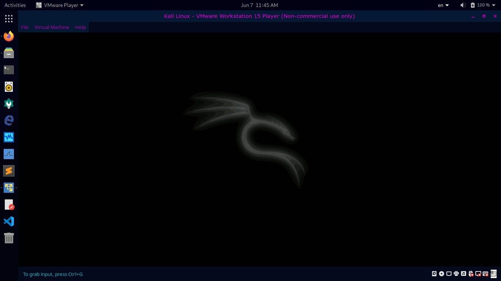

Hardware propio
Arduino & ESP32
Proyectos de hardware programable, de cero a funcionando.

Builder · Hacker · Curioso
Sistemas reales, en producción, resolviendo problemas reales.
Más recursos vienen en camino — por ahora, esto:
Proyectos random, bugs, y un botón que definitivamente no deberías tocar.
Proyectos de hardware programable, de cero a funcionando.
Hardware y software que sostienen todo lo de este sitio.

$ cat dato-curioso.md
# Todo corre sobre Ubuntu
Desde la laptop hasta la Nintendo Switch — todo en Linux. Algunas extensiones GNOME que uso para volver locas las pantallas (y a veces literalmente quemarlas un poco):
¿Por qué Linux y no Windows para esto? Porque el kernel es abierto: puedes cambiarlo. Mainline, Liquorix, Xanmod, Zen — cada uno prioriza algo distinto (latencia, throughput, eficiencia), y tú eliges. En Windows el kernel es una caja cerrada; en Linux es una pieza más que puedes intercambiar según lo que necesites.
$ _
De Kali Linux en la PC, pasando por hardware con ESP32, hasta el Flipper Zero en tu mano. Mismo camino, distinto terreno — sigue bajando.
Herramientas hechas en Python para entender ingeniería social y automatización — el botón de cada una te lleva a entender el peligro real antes que la herramienta.

El puente entre la PC y el Flipper: hardware programable que también puede usarse mal.
BadUSB, Sub-GHz, NFC, Infrared y GPIO — proyectos reales, sin repos, solo archivos para que los explores tú mismo.
El NFC del Flipper puede leer y, en algunos casos, clonar tarjetas mal protegidas. No es magia ni es exclusivo de hackers — es una razón real para cuidar dónde y cómo usas tu tarjeta.
Aprende sobre clonación NFCLas pantallas queman las retinas — estos son libros que vale la pena dejar el celular para leer.
Leer en papel (o al menos lejos de una pantalla con notificaciones) le da un descanso real a tu vista y a tu cabeza. No reemplaza nada de lo digital — solo lo balancea.